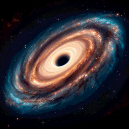
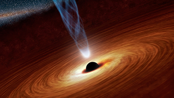

Les Trous Noirs dans les Galaxies : Une Exploration de Leur Influence Cosmique et Limites sur la Terre
Les trous noirs jouent un rôle crucial dans l'évolution et la dynamique des galaxies. Leur influence sur une galaxie et sur des objets tels que la Terre est complexe et dépend de plusieurs facteurs. Voici quelques aspects de l'influence des trous noirs dans une galaxie :
1. Stabilisation du Noyau Galactique :
Les trous noirs supermassifs, situés généralement au centre des galaxies, ont une influence stabilisatrice sur le noyau galactique. Leur masse énorme contribue à maintenir la cohésion de la galaxie.
2. Formation et Évolution Galactique :
Les interactions gravitationnelles avec d'autres étoiles et objets dans la galaxie peuvent être influencées par la présence de trous noirs. Les processus tels que les fusions d'étoiles et la capture d'objets peuvent être affectés.
3. Jets de Plasma et Quasars :
Certains trous noirs supermassifs sont associés à des phénomènes énergétiques tels que les jets de plasma. Ces jets peuvent avoir un impact sur l'environnement galactique et contribuer à la régulation de la formation d'étoiles.
4. Effets sur les Étoiles Voisines :
Les étoiles situées à proximité d'un trou noir peuvent subir des perturbations orbitales. Cela peut entraîner des changements dans la dynamique stellaire locale.
5. Influence Gravitationnelle à Grande Échelle :
À une échelle plus large, la présence de trous noirs peut influencer la structure globale de la galaxie. Les étoiles, les gaz et d'autres matières peuvent être affectés par la gravité du trou noir.
En ce qui concerne la Terre, la distance entre notre planète et le centre de la galaxie est telle que l'influence gravitationnelle directe d'un trou noir supermassif au centre de la Voie lactée est minime. Les effets spécifiques sur la Terre seraient négligeables. Cependant, les trous noirs stellaires, formés à partir de l'effondrement d'étoiles massives, pourraient avoir une influence sur l'évolution stellaire et la dynamique à l'intérieur de la galaxie, mais cela se produit à une échelle astronomique et n'aurait pas d'impact direct sur la Terre. En résumé, bien que les trous noirs aient une influence significative sur la structure et l'évolution des galaxies, leur impact spécifique sur la Terre est limité en raison des distances astronomiques impliquées.